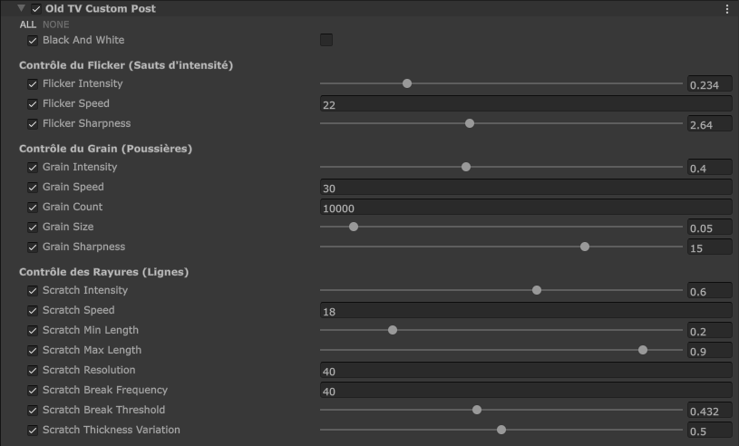

Here are my Shaders
Post-Process: Vintage Cinema Filter (HLSL / HDRP)
I developed a custom Post-Process shader in Unity HDRP to recreate the aesthetic of degraded vintage cinema film.


User interface and editable parameters of the effect in Unity:

1. Black & White Conversion
The shader first calculates the scene luminance using a dot product with standard visual perception coefficients (Rec. 601).
A simple condition based on a float variable "_IsBlackAndWhite" allows the mode to be dynamically toggled on or off.

float3 color = SAMPLE_TEXTURE2D_X(_InputTexture, sampler_InputTexture, uv).rgb;
if(_IsBlackAndWhite > 0.5) {
float lum = dot(color, float3(0.299, 0.587, 0.114));
color = float3(lum, lum, lum);
}2. Flicker Effect (Light Jumps)
To simulate the brightness variations of an old projector, I use a time-based hash function (`hash`).
The "floor()" function is used to lock the noise into distinct steps. The "pow()" function accentuates the rarity and suddenness of light drops according to the "_FlickerSharpness" variable chosen by the user.

float rawNoise = hash(float2(floor(time * _FlickerSpeed), 123.45));
float flickerNoise = pow(rawNoise, _FlickerSharpness);
float flicker = flickerNoise * _FlickerIntensity;
color *= (1.0 - flicker);3. Procedural Scratch Generation
The vertical film scratches are created by dividing the screen into columns using a one-dimensional UV grid "gridX".
If a column passes the random probability test, a line is drawn. Horizontal interruptions are then generated via a "breakModifier" to avoid having simple, continuous straight lines. Finally, the effect applies either a drop shadow (black scratch) or a burn (white scratch).

float scratchTime = floor(time * _ScratchSpeed);
float gridX = uv.x * (_ScratchResolution * 5.0);
float cellX = floor(gridX);
float randCol = hash(float2(cellX, scratchTime));
if (randCol > 0.997) {
float xSub = frac(gridX) - 0.5;
float lineProfile = pow(saturate(1.0 - abs(xSub) * 2.0), thicknessPower);
scratchLine = lineProfile * withinLine * _ScratchIntensity;
}4. Grain & Lens Dust
Instead of using a looping noise texture, the grain is entirely mathematical and procedural.
It runs on a cellular noise algorithm using a double "for" loop that checks neighboring cells. This generates unique micro-dots and dust aggregates on every frame, ensuring ultra-realistic dynamics.

for(int y=-1; y<=1; y++) {
for(int x=-1; x<=1; x++) {
float2 neighbor = float2(x, y);
float2 cell = i_uv + neighbor;
dots += pow(saturate(1.0 - dist * (1.0 / _GrainSize)), _GrainSharpness);
}
}Shader: Procedural Outline & Hatching (Shader Graph / HDRP)
To improve the game's readability and player guidance, we required a clear visual feedback system to highlight interactable objects. I designed a procedural outline and anime-style hatching effect built entirely with Unity Shader Graph.

HDRP Custom Pass Rendering Architecture:
Instead of assigning this material directly to objects, the effect is injected into the rendering pipeline using an HDRP Custom Pass (DrawRenderersCustomPass). It dynamically filters objects matching the "Interactible" Layer Mask and overrides their rendering with the custom outline material.

1. Procedural Panning Lines
The core pattern relies on generating custom angled lines. The shader takes the object space coordinates, splits them, and combines them into a 2D vector that is rotated using the _LineAngle property.
By blending Time multiplied by _PanSpeed, the lines continuously slide across the surface. A Fraction node clamps the values to create a loop, while math operations handle the line density and spacing via _LineWidth and _LineSpacing.


2. Edge Softness & Clean Masking
To prevent the lines from looking pixelated or overly sharp, the pattern is passed through a Smoothstep node.
The interpolation bounds are driven by calculations using _LineWidth and _LineEdgeSoftness. This ensures smooth anti-aliased transitions before the color is injected.
Mathematical inputs map the line edges relative to the softness variable, granting precise art-direction control over the anime style.

3. Fresnel Rim Highlight & Final Compositing
A Fresnel Effect node is computed using the surface normal and view direction to isolate the outer silhouettes of the mesh.
The procedural screen lines mask is inverted (One Minus) and blended with the _FilterColor, while the Fresnel receives its own _FresnelColor. Everything is combined in an Add node before outputting directly into the Emission channel of the final HDRP Fragment master node.

Rendering: X-Ray Flashlight Layering (HDRP Custom Pass)
To ensure optimal gameplay visibility, the player's flashlight needs to be rendered on top of every world object (X-Ray effect) while maintaining its internal structure and self-sorting perfectly.

1. Sans Custom Pass : La lampe est masquée par les décors et les murs du monde.

2. Première Pass Seule : Visible à travers tout, mais l'ordre d'affichage interne est erroné (les composants se superposent mal).

3. Les Deux Passes Actives : La lampe apparaît toujours devant le monde, et sa géométrie est rendue proprement.
Architecture du double DrawRenderersCustomPass dans Unity HDRP :
Pour arriver à ce résultat impeccable, l'injection dans le pipeline utilise deux passes successives filtrant le Layer Mask "Flashlight" :

Pass 1: Rendre devant le monde
La première pass force l'affichage de la lampe par-dessus l'environnement. Elle vide le tampon de profondeur existant (Clear Flags: Depth) et utilise un Depth Test configuré sur "Always".
L'objet ignore ainsi la géométrie de la scène globale, mais ce traitement global détruit l'ordre de rendu des sous-éléments de la lampe elle-même.
Pass 2: Tri et correction de l'objet
La deuxième pass vient corriger l'affichage interne. Configurée avec un Clear Flags: None pour conserver le contexte, elle réinitialise le Depth Test sur "Less Equal".
Cela permet aux différents sub-meshes de la lampe (lentille, corps, boutons) de se tester et de se trier à nouveau correctement les uns par rapport aux autres.